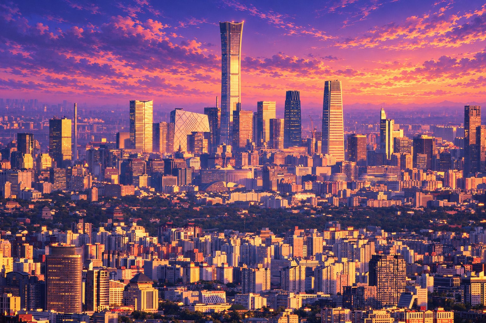
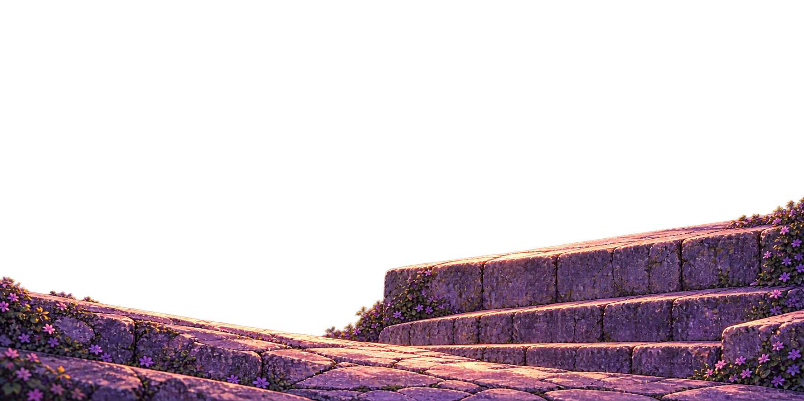
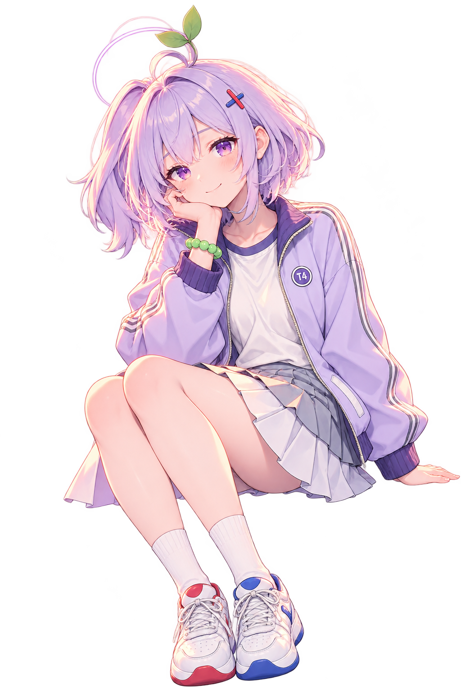
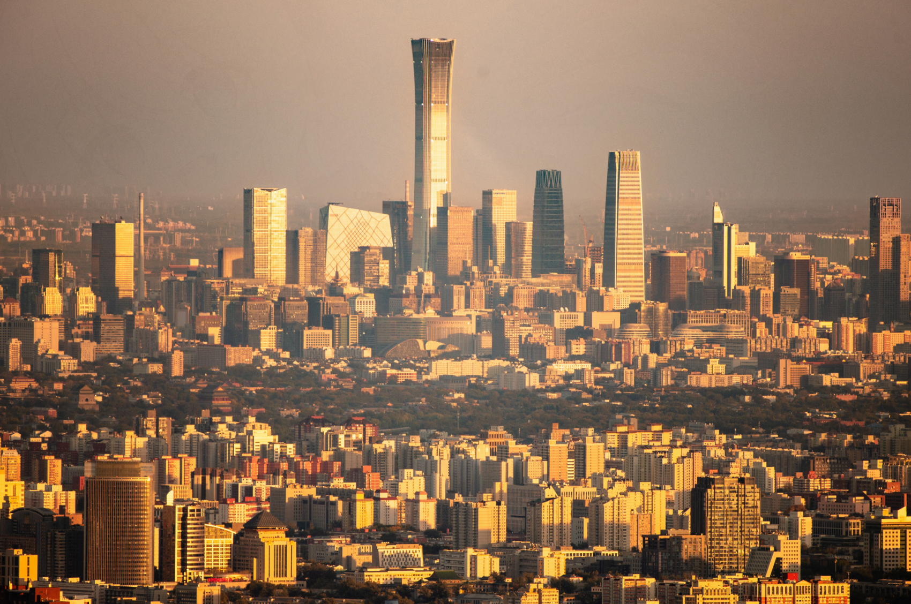

城市底片
按提供照片保留城市建筑与天际线
S11 · LAYERED COMPOSITION
分开构图，再让透视相遇。选中一个图层，拖动或微调右侧参数。






正在调整 · 人物城市依据新提供的照片重绘，坐姿沿用原首页参考。生成稿近似保留建筑几何，可用“原图对照”核对。Liru 原设定：JerrYamada · CC BY 4.0；本页为 AI 辅助风格探索。素材与操作说明 ↗